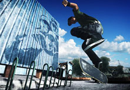

Skateboarding
Skateboarding is the act of both riding on and performing tricks using a skateboard. A person who skateboards is most often referred to as a skateboarder or a skater. It is also a recreational activity, a job, or a method of transportation. Skateboarding has been shaped and influenced by many skateboarders throughout the years. A 2002 report by American Sports Data found that there were 18.5 million skateboarders in the world.
Skateboarding was probably born sometime in the late 1940s or early 1950s when surfers in California, wanted something to surf when the waves were flat. No one knows who made the first board, rather, it seems that several people came up with similar ideas at around the same time. These first skateboarders started with wooden boxes or boards with roller skate wheels attached to the bottom. The boxes turned into planks, and eventually companies were producing decks of pressed layers of wood -- similar to the skateboard decks of today. During this time, skateboarding was seen as something to do for fun besides surfing, and was therefore often referred to as "Sidewalk Surfing".
The first manufactured skateboards were ordered by a Los Angeles, California surf shop, meant to be used by surfers in their downtime. The shop owner, Bill Richard, made a deal with the Chicago Roller Skate Company to produce sets of skate wheels, which they attached to square wooden boards. Accordingly, skateboarding was originally denoted "sidewalk surfing" and early skaters emulated surfing style and maneuvers.
The current generation of skateboards is dominated by street skating. Most boards are about 7¼ to 8 inches wide and 30 to 32 inches long. The wheels are made of extremely hard polyurethane, with hardness (durometer) level of approximately 99a. The wheel sizes are relatively small so that the boards are lighter, and the wheel's inertia is overcome quicker, thus making tricks more manageable. Board styles have changed dramatically since the 1970s but have remained mostly alike since the mid 1990s. The contemporary shape of the skateboard is derived from the freestyle boards of the 1980s with a largely symmetrical shape and relatively narrow width. This form had become standard by the mid '90s.
Go Skateboarding Day was created in 2004 by a group of skateboarding companies to promote skateboarding and help make it more noticeable to the world. It is celebrated every year on June 21st.
Source:Wikipedia